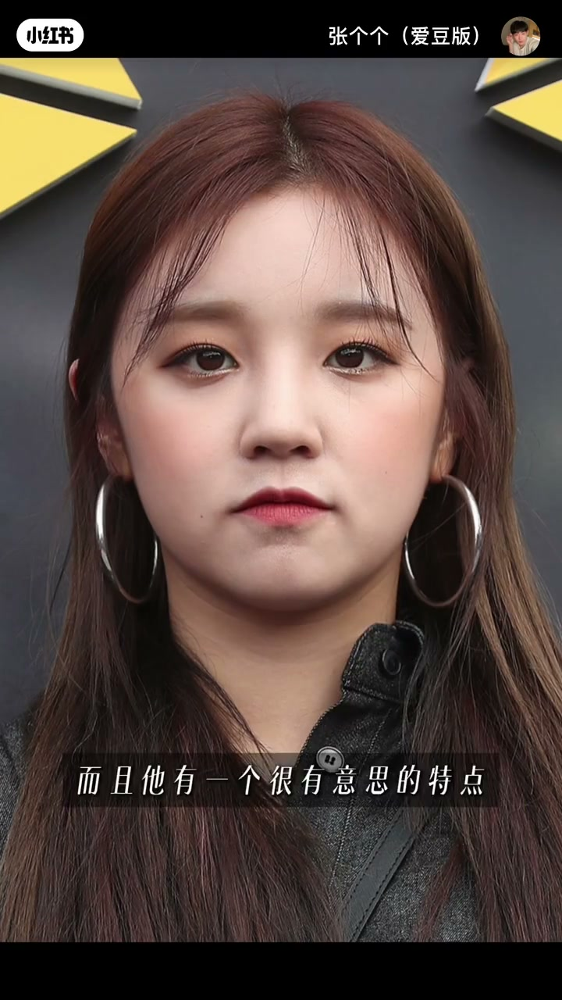
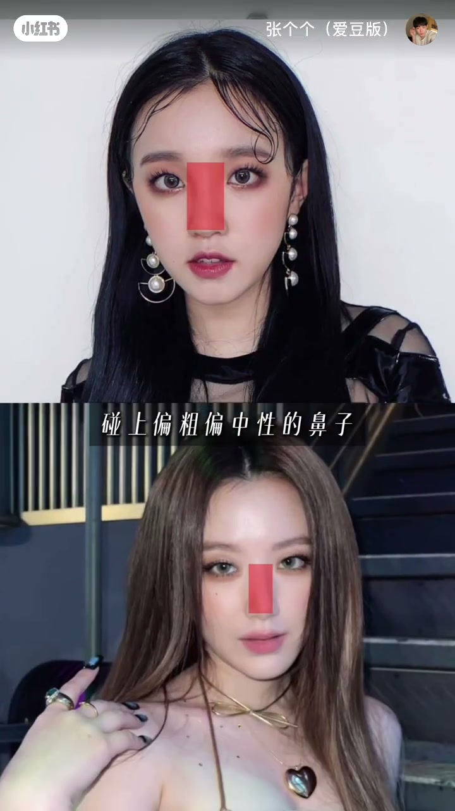
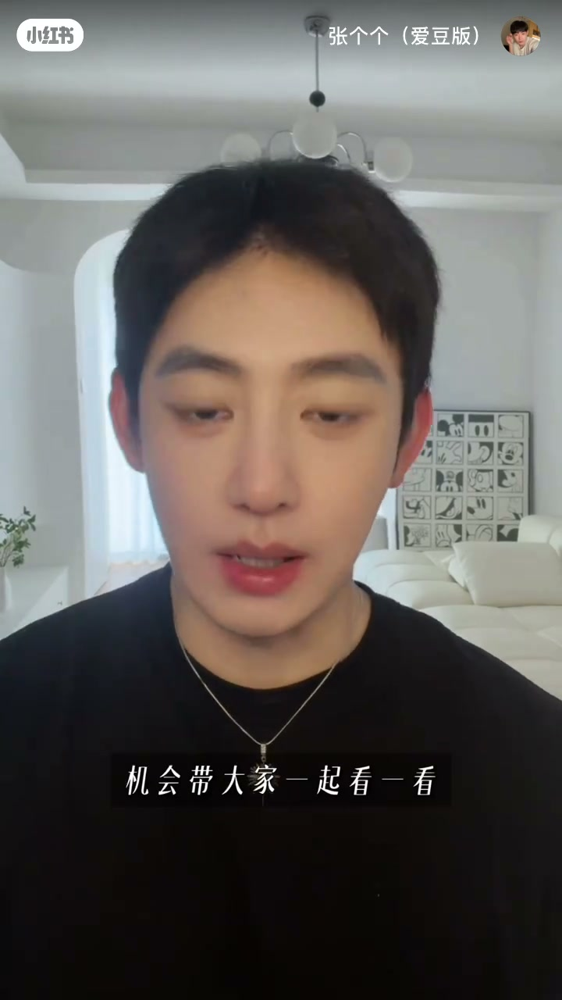
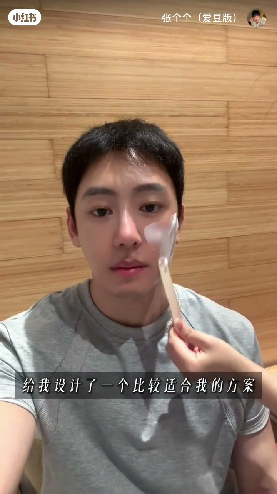
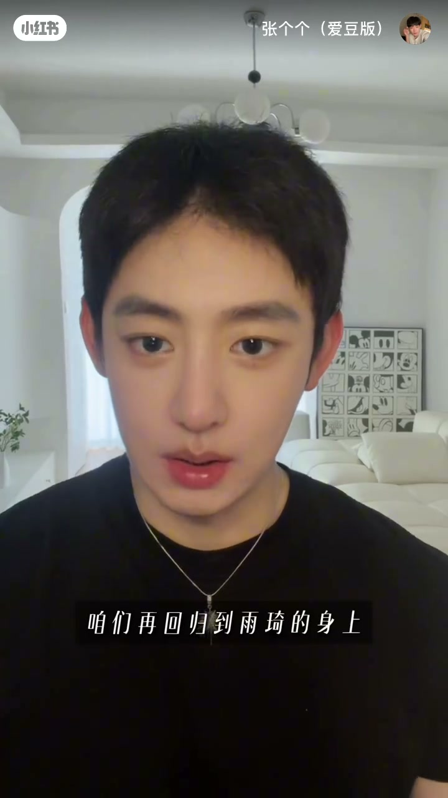
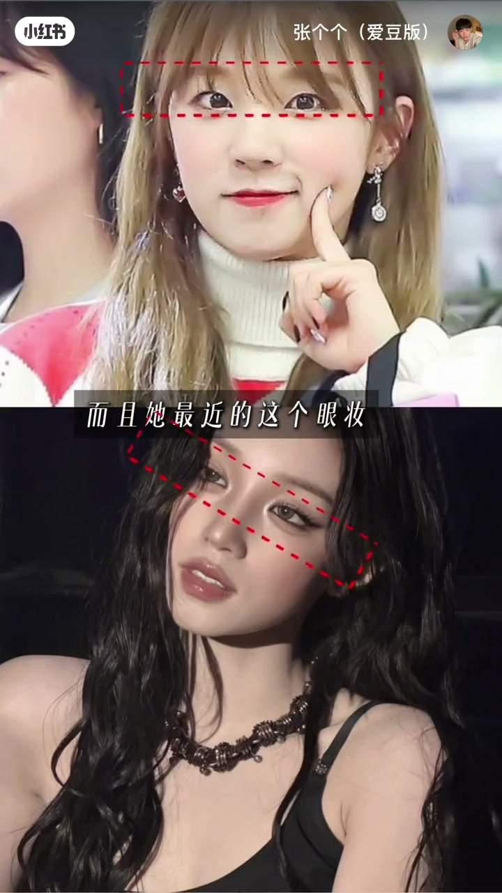
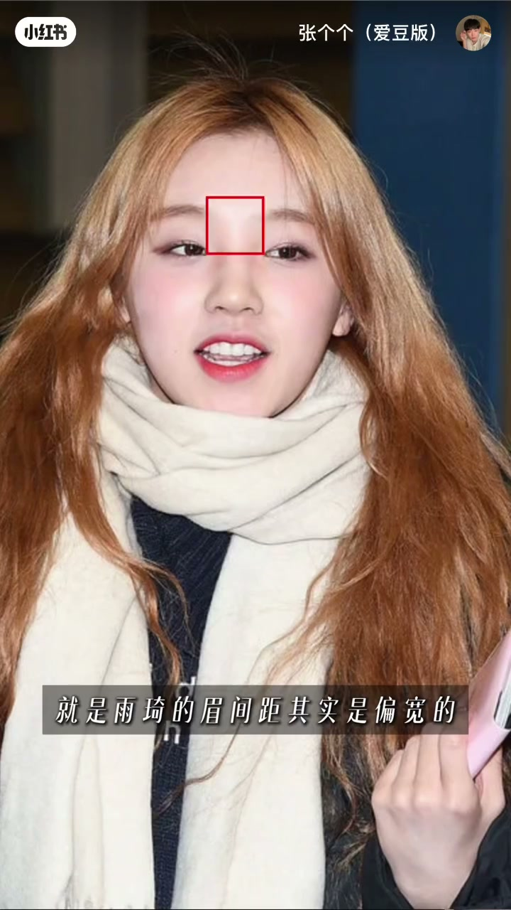
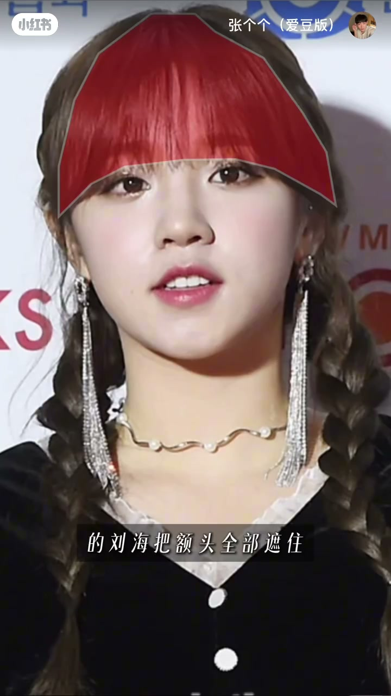

内容要点
一段 2 分 37 秒的变美思路分析，博主从韩国练习生视角扒雨琦做对了什么。①面部特征：典型短心形脸+眉间距远（眉头眼头同一位置）。②两大问题：娇俏眉眼+偏粗偏中性鼻子，风格没平衡好鼻子抢戏；脸上肉肉饱满容易垂显疲惫。③显疲惫根源=皮肤不贴合+肉肉；博主亲身经历填充类项目后显老困扰，理念=有问题去专门的地方找专门的办法。④探店：回国后定期来的机构，检测皮肤状况，王姐针对垂和松设计专属方案+验证，做完后的状态。⑤变美关键一=面部状态更紧致；关键二（易忽略）=鼻梁有存在感→有意识加重鼻影→中性鼻子跟甜甜眉眼平衡。⑥关键三=眼妆更有存在感，把视觉重点往眉眼带。⑦眉间距偏宽的误区：很多人用刘海遮眉毛，但雨琦鼻梁有存在感+厚重刘海遮额头→视觉更集中鼻子→适得其反；聪明方法=重心放眉眼+更有存在感眼妆→视觉重心上移→五官比例更和谐协调。
知识结构
短心形脸+眉间距远（眉头眼头同一位置）。
娇俏眉眼+中性鼻子失衡鼻子抢戏；肉肉脸垂显疲惫。
皮肤不贴合+肉肉；填充后显老困扰，找专门办法。
检测皮肤+王姐针对垂和松设计方案+验证。
面部更紧致+鼻梁有存在感→加重鼻影平衡。
眼妆有存在感→视觉重心上移；刘海遮眉适得其反。
雨琦变时尚的核心思路=眉眼重心法。①面部特征：短心形脸+眉间距远（眉头眼头同一位置）。②两大问题：娇俏眉眼碰上偏粗偏中性鼻子→风格没平衡好鼻子抢戏；肉肉饱满脸容易垂显疲惫。③变美关键一=面部状态更紧致（解决垂和松）；关键二（易忽略细节）=鼻梁有存在感→有意识加重鼻影→中性鼻子跟甜甜眉眼平衡；关键三=眼妆更有存在感，把视觉重点往眉眼上带。④眉间距偏宽的误区：别用刘海遮眉毛——鼻梁有存在感+厚重大面积刘海遮额头→视觉反而更集中到鼻子→适得其反。⑤聪明方法：把重心放在眉眼上，通过更有存在感的眼妆把视觉重心往上移，五官比例反而更和谐协调。
00:00-00:40面部特征与两大问题
面部特征：「雨绮其实是很典型的短心型脸，而且她有一个很有意思的特点：两个眉间距很远，一般我们都是眉头比眼头还要靠前，雨绮的眉头和眼头基本处于同一位置。」
问题一：「像雨绮这种的娇俏的眉眼，碰上偏粗偏中性的鼻子，如果妆容上没有把这两个风格平衡好，鼻子就会特别的抢戏。」
问题二：「脸上本身肉肉比较饱满，脸一旦容易有点垂就会显得非常的疲惫。」


00:40-01:42显疲惫根源+探店
根源：「只要是皮肤不贴合又肉肉的情况，就会出现一点点显垂、显疲惫的这种状态。因为我之前就是为了追求脸部的轮廓做过这种填充类的项目了，后面是一直比较困扰我的，就是整个人看起来就跟老爷爷似的。」
理念：「我的理念是有问题就去专门的地方找专门的办法。」
探店：「今天我来的这家呢是我回国以后一直定期会来的地方，先测一下这个状况，王姐给我分析的还蛮细的，主要就是针对我的垂和松的问题给我设计了一个比较适合我的方案。下面记住了啊一定要验证。」


01:42-02:37变美关键：眉眼重心法
鼻影平衡：「她变好看的关键除了面部状态更加紧致以外，还有一个特别会容易大家忽略的细节，就是雨绮的鼻梁本身就比较有存在感，所以说她现在的这个妆容会有意识的去把这个鼻影加重一点，这样一来原本比较中性的这个鼻子会跟她甜甜的眉眼就平衡住了。」
眼妆带重心：「她最近的这个眼妆也明显的有存在感了，这其实也是一个很聪明的小技巧，就是把大家的视觉重点往眉眼上去带。」
刘海误区：「雨绮的眉间距其实是偏宽的，很多人遇到这种情况第一个想到的就是用刘海遮住我的眉毛不就好了，但是这个方法对雨绮来说是不适合的，因为她的鼻梁本身就是比较有存在感，如果再用厚重的大面积的刘海把额头全部遮住，视觉上面反而会更集中到鼻子上，会更容易适得其反。」
重心上移：「所以她现在非常聪明的处理的方法是把重心放在眉眼上，通过更有存在感的眼妆把视觉重心往上移，这样五官的比例反而会更加的和谐和协调。」




完整转录（108段）
以下文本由 Whisper medium 模型自动转录，可能存在少量识别误差，已尽可能修正。
最近的这个状态有点不太一样
五官还是那么不五官
怎么突然就变成另外一个人了
很多人就会说
你这整容了
所以说今天我就从一个
有韩国练习生的视角
好好给大家扒一扒
雨绮到底做对了什么
让她改变这么的大
老规矩
咱们先看一下她的面部特征
雨绮其实是很典型的短心型脸
而且她有一个很有意思的特点
两个眉间距很远
一般我们都是眉头比眼头还要靠前
雨绮的眉头和眼头
基本处于同一位置
问题也恰恰出在这里
像雨绮这种的娇俏的眉眼
碰上偏粗偏中性的鼻子
如果妆容上没有把这两个风格平衡好
鼻子就会特别的抢戏
而且她还有一个问题
就是脸上本身肉肉比较饱满
脸一旦容易有点垂
就会显得非常的疲惫
最近这些特别出圈的一些造型
最大的变化其实不只是眼妆和发型
而是整张脸看起来更加紧紧的
其实只要是皮肤不贴合
又肉肉的情况
就会出现一点点显垂
显疲惫的这种状态
因为我之前就是为了追求脸部的轮廓
做过这种动物类的项目了
后面是一直比较困扰我的
就是整个人看起来就跟老爷爷似的
所以说这一次也正好想借着这个机会
带大家一起看一看
容易想疲惫的这些问题
像我们这种的潜力性生平
是怎么去调整和改善的
我的理念是
有问题就去专门的地方找专门的打败
我今天来的这家呢
是我回国以后一直定期会来的地方
就因为结果很OK
所以说我跟你们讲
外国人非常认可
能见到好多老外在这
而且还遇到了小詹的厉害
来了以后呢
先测一下这个状况
皮肤还行
王姐给我分析的还蛮细的其实
她老可爱了
老喜欢她了
主要就是针对我的垂和松的问题
给我设计了一个比较适合我的方案
下面记住了啊
一定要验证
这个也验一下
哦嘞 没问题
下面就是我现在刚做完的状态
你们看一下
这个
今年55岁
你们敢信吗
老天
拜拜 下次见
好了 聊完了这次的探店
咱们再回到雨绮的身上
其实她变好看的关键
除了面部状她更加紧紧以外
还有一个特别会容易
大家忽略的细节
就是
雨绮的鼻梁本身就比较有存在感
所以说她现在的这个妆容
会有意识的去把这个鼻影加重一点
这样一来
原本比较中性的这个鼻子
会跟她甜甜的眉脸就平衡住了
而且她最近的这个眼妆
也明显的有存在感了
你们发现了没
这其实也是一个很聪明的小技巧
就是把大家的视觉重点
往眉眼上去带
还有一个
很多人可能没注意到的点
就是雨绮的眉间距其实是偏宽的
很多人其实遇到这种情况
第一个想到的就是
我用刘海遮住我的眉毛不就好了
但是这个方法对雨绮来说是不适合的
因为她的鼻梁本身就是比较有存在感
如果再用厚重的大面色的刘海
把额头全部遮住
视觉上面反而会更集中到鼻子上
会更容易适得其反
所以她现在非常聪明的处理的方法是
把重心放在眉眼上
通过更有存在感的眼妆
把视觉重心往上移
这样五官的比例
反而会更加的和谐和协调